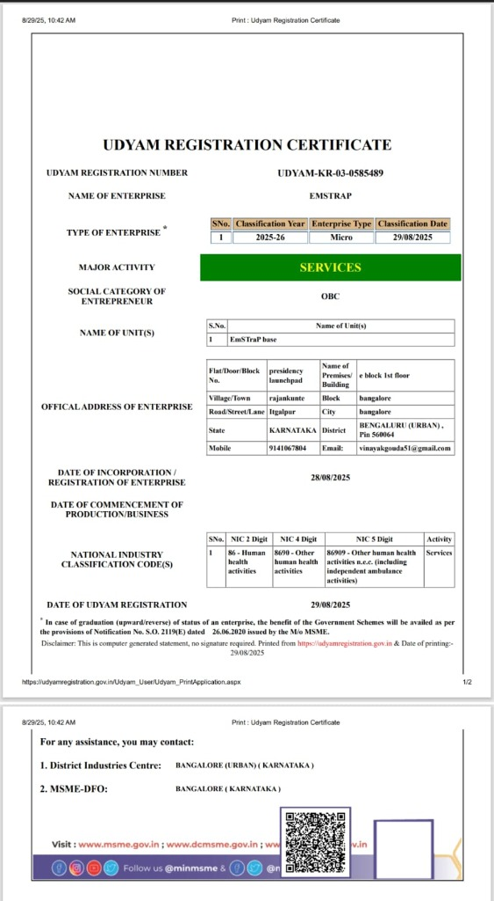

About EMSTRAP
Building the Future of Emergency Response
Our Identity
Emergency situations demand speed, coordination, and accurate decision-making. However, today's emergency response systems often operate in isolation, resulting in delayed communication, slower response times, and missed opportunities to save lives.
EMSTRAP was established with a vision to modernise emergency response through technology. By integrating Artificial Intelligence, real-time communication, GPS tracking, and intelligent coordination into a single platform, EMSTRAP enables seamless collaboration between citizens, ambulance services, hospitals, police departments, traffic authorities, and organisations.
Our ecosystem is designed not only to respond faster during emergencies but also to improve preparedness, situational awareness, and operational efficiency for all stakeholders. Whether it is a medical emergency, workplace incident, or city-wide emergency coordination, EMSTRAP provides the technology needed to make emergency response smarter, faster, and more reliable.
At EMSTRAP, we believe that technology should not just connect systems—it should help save lives.
Our Mission
To build an intelligent emergency response ecosystem that enables faster medical assistance, improves communication between emergency services, and ensures timely care through innovative technology.
Our Vision
To become India's leading AI-powered emergency response platform, empowering healthcare providers, emergency responders, government agencies, and enterprises with intelligent solutions that make communities safer and emergency care more accessible.
Registration
MSME Registered & Certified: EMSTRAP is officially registered and certified under the Ministry of Micro, Small & Medium Enterprises, Government of India.

Key Focus Areas
- • Urban traffic priority corridors clearing
- • Hospital emergency department pre-alerts
- • Intelligent multi-agency coordination models
The Problem We Are Solving
- • Delayed ambulance arrival due to heavy urban traffic congestion.
- • Limited communication and telemetry sharing between hospital ERs and incoming ambulances.
- • Lack of unified, real-time map visibility during city-wide emergencies.
- • Manual dispatching and calling leading to cumulative administrative delay.
Our Solution
EMSTRAP provides a unified emergency response ecosystem that digitally connects every stakeholder involved in emergency care.
Through intelligent automation, AI-powered decision support, real-time GPS tracking, and seamless communication, EMSTRAP enables faster emergency detection, efficient dispatch, improved hospital preparedness, and enhanced collaboration between healthcare providers, emergency responders, government authorities, and organisations.